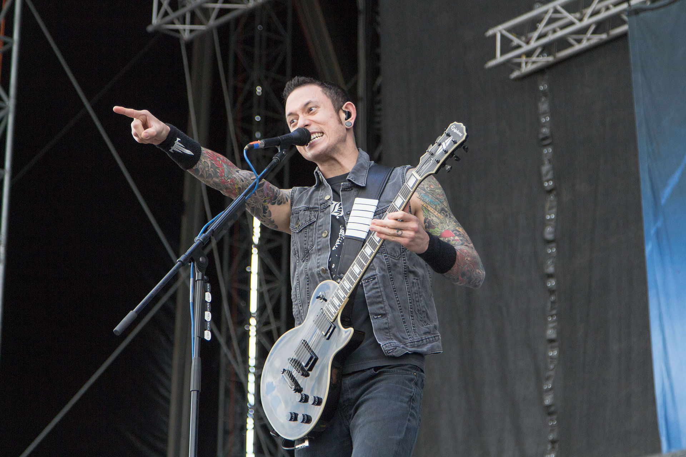

Matt Heafy
Matthew Kiichi Heafy (born January 26, 1986) is a Japanese American musician, best known as the rhythm guitarist and lead vocalist for the American heavy metal band Trivium. Heafy is also the lead vocalist for the band Capharnaum, along with Trivium's former producer Jason Suecof. He is also an avid gamer and practitioner of Brazilian Jiu-Jitsu. Matt streams daily on his Twitch channel KiichiChaosReigns playing video games, doing guitar clinics, vocal warm ups and showcasing his Brazilian jiu-jitsu classes.
Matt Heafy at Nova Rock Festival 2014
Biography
Heafy was born in Iwakuni, Japan to an American father and a Japanese mother. His father, formerly a member of the United States Marine Corps, is half-Irish and half-German. Although Heafy was born in Japan, he lived there for only one year. He does not speak Japanese fluently; however, he has mastered some of the basic phrases and uses them when he performs in Japan. His family then moved to Orlando, Florida, where he currently resides. Heafy attended Lake Brantley High School. He completed his senior year while also touring in Europe, and graduated in 2004. During those years, Heafy used to live a straight edge lifestyle. Heafy also has a younger sister who does covers of video game music on her YouTube channel. Heafy learned to play the tenor saxophone in years leading up to becoming more serious on guitar at the age of eleven. At that period he was mostly listening to pop punk bands and even auditioned for a local one called "Freshly Squeezed" by playing the Blink-182 song Dammit. However, following his audition, he never got a follow-up call back. He also cites being introduced to heavy metal by his classmate, David, who gave him a copy of Metallica's self-titled album. Heafy does not know formal music theory and was almost completely self-taught. He does know how to read sheet music, but can only apply it on the saxophone. However, in 2015, he started taking formal training for the guitar. "Self-taught for quite a bit of it, did lessons on and off for maybe two or three years, but I do not know anything formal music on guitar. I do on saxophone though…but that doesn’t help me on guitar." On January 10, 2010, Heafy married Ashley Howard in Orlando, Florida. The wedding was attended by close friends and family. Matt still often uses the same first Gibson Les Paul he got from his father, but only in studio settings. For live performances he uses his signature Epiphone Les Paul that is modeled off of his Gibson.

Matt Heafy performing live.